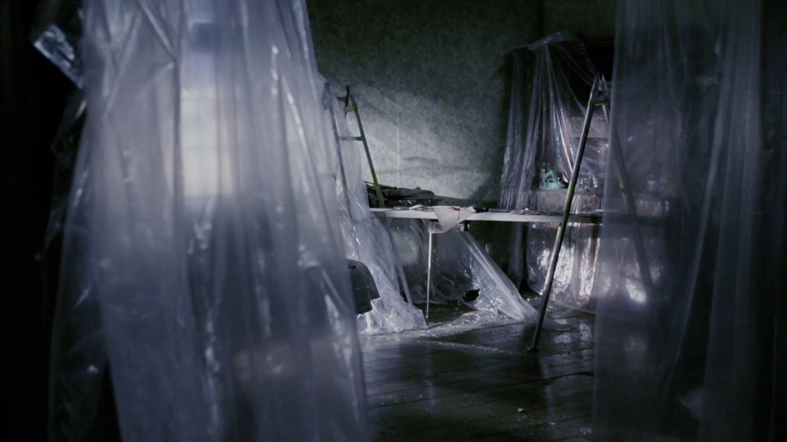

EXPANSION
A man inherits his
estranged father's mansion
and the maze he built
just for him.


There are things inside us we'd rather bury than face. Things we hide from ourselves, from our families, from the world. Those things don't disappear. They rot.

CHARACTERS


The house is expressive of Jon's mental state. It's a character in its own right, one that's carrying a secret within its walls.


Visual Treatment


About


2026Sundance Film Festival — Official Selection
2025Sitges Fantastic Film Festival of Catalonia — Official Selection
2025Vimeo Staff Pick
2024Clermont-Ferrand Int'l Short Film Festival — Official Selection
2024Raindance Film Festival — Official Selection
2024Palm Springs Int'l Short Film Festival — Official Selection
2024DokuFest — Official Selection
2024AFI Fest — Official Selection
2024NYU First Run Film Festival — Best Director & Best Short Film
2024National Board of Review — Student Grant
2024Lima International Film Festival — Audience & Special Jury Award
2024Shorts Mexico — Best Short Film
2024FCZ, Zaragoza Film Festival — Best Short Film
2022Vimeo Staff Pick
2021Vimeo Staff Pick
2019Aesthetica Short Film Festival — Official Selection
2016Moscow International Film Festival — Official Selection
2015Starz Denver Film Festival — Official Selection
2015Hollyshorts Film Festival — Official Selection
William Morris Endeavor
Marco Alvarez — MAlvarez@wmeagency.com
Jacey Baldovino — JBaldovino@wmeagency.com
Industry Entertainment
Rachel Linehan — rachel@industryentertainment.com
Steve Crawford — stephenc@industryentertainment.com
Direct
Alex Fischman Cárdenas — alexfischmancardenas@gmail.com
Trout Cohen — troutcohenfilms@gmail.com